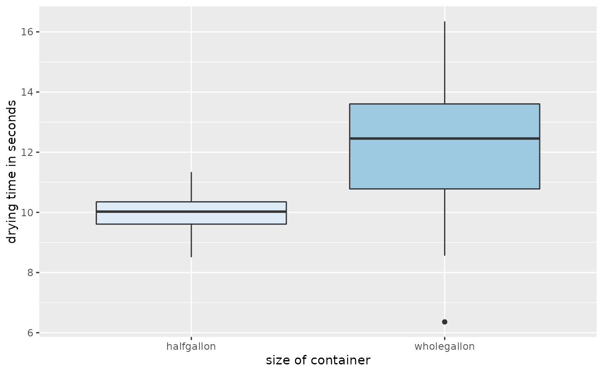

North Carolina county demographics for 2010 and county voter information for the North Carolina Amendment 1 ballot initiative which took place May 8, 2012, are stored in the data frame NC2010DMG.
NC2010DMG
A data frame with 100 observations (counties) on the following 32 variables:
countyName (Name of North Carolina county)
pop2010 (Total population of the county in 2010)
medage (Median age of the county in 2010)
divorced (Number of divorced adults in 2010)
pctrural (The percent of the population that lived in a rural area of the county in 2010)
edu_baorup (The total number of people with a Bachelor's degree in 2010)
medinc (The median household income adjusted for inflation in 2010)
col_enroll (The number of people enrolled in college in 2010)
age18-24 (The number of people between the ages of 18 and 24 in the county in 2010)
age25-29 (The number of people between the ages of 25 and 29 in the county in 2010)
age60up (The number of people over the age of 60 in the county in 2010)
white (The number of white people in the county in 2010)
black (The number of black people in the county in 2010)
MaleBachelor (The number of males with a Bachelor's degree in 2010)
MaleMaster (The number of males with a Master's degree in 2010)
MaleProfessional (The number of males with a professional degree in 2010)
MaleDoctorate (The number of males with a Doctorate degree in 2010)
FemaleBachelor (The number of females with a Bachelor's degree in 2010)
FemaleMaster (The number of females with a Master's degree in 2010)
FemaleProfessional (The number of females with a professional degree in 2010)
FemaleDoctorate (The number of females with a Doctorate degree in 2010)
Owneroccupied (The number of homes that are owner occupied in 2010)
Renteroccupied (The number of homes that are renter occupied in 2010)
popden (The number of people per square mile in 2010)
pctfor (The percent of voters that voted for Amendment 1 on May 8, 2012)
turnout (The percent of registered voters who voted May 8, 2012)
obama08 (The percent of voters who voted for Barrack Obama in the 2008 presidential election)
mccain08 (The percent of voters who voted for John McCain in the 2008 presidential election)
evanrate (Evangelical rates of adherence per 1,000 population in 2010)
churches (The number of churches in the county in 2010)
colleges (The number of colleges in the county in 2010)
The original data was provided by E.L. Davison, Department of Sociology, Appalachian State University. Variables
countyName through popden were obtained from https://data.census.gov/cedsci/ and further cleaned by Maureen O'Donnell and Eitan Lees. The variables pctfor through mccain08 were obtained from https://www.ncsbe.gov/. The variables evanrate and churches were obtained from https://thearda.com, while the information for colleges was obtained from https://collegestats.org/colleges/north-carolina/.
Ugarte, M. D., Militino, A. F., and Arnholt, A. T. 2015. Probability and Statistics with R, Second Edition. Chapman & Hall / CRC.
ggplot(data = MILKCARTON, aes(x = size, y = seconds)) + geom_boxplot()ggplot(data = MILKCARTON, aes(x = size, y = seconds, fill = size)) + geom_boxplot() + guides(fill = "none") + scale_fill_brewer() + labs(x = "size of container", y = "drying time in seconds")